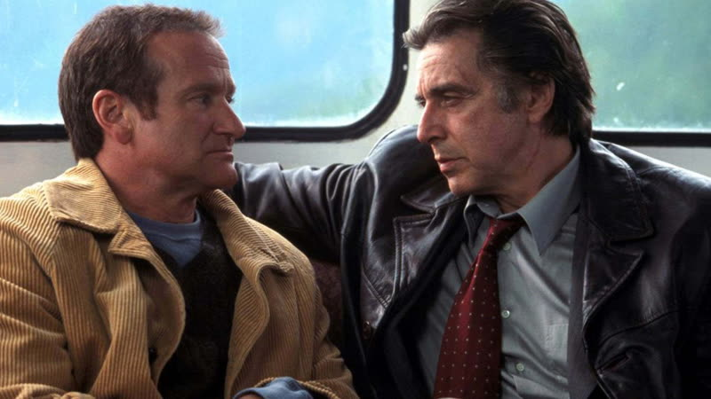
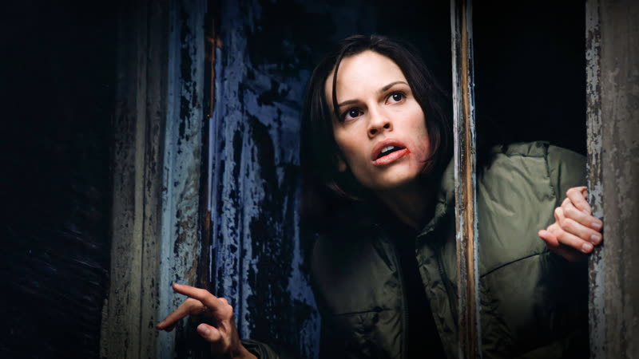
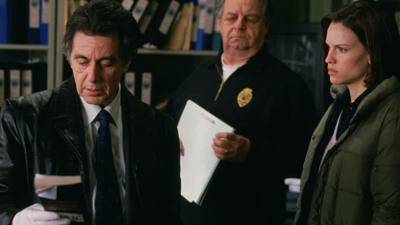
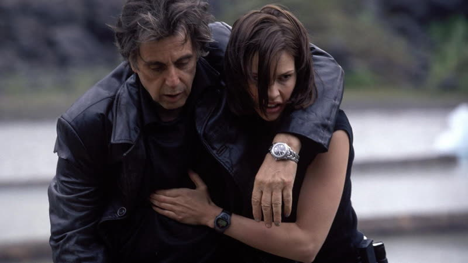
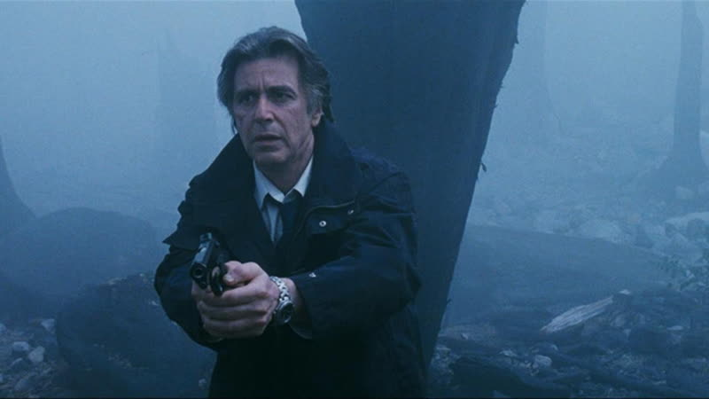
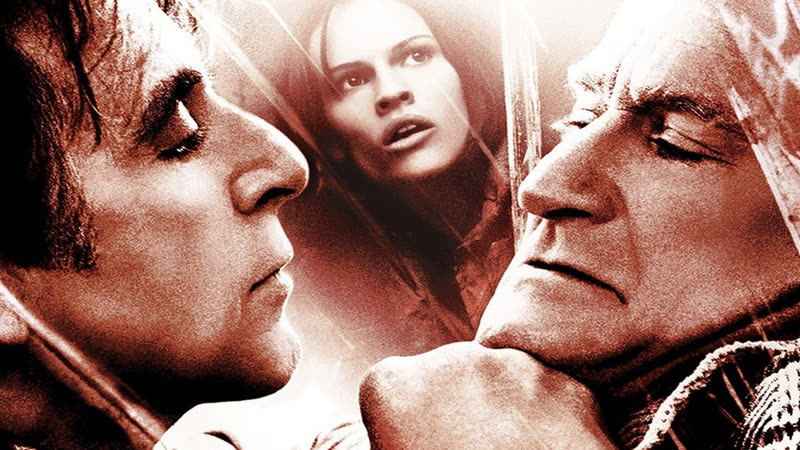

2002
Insomnia
A Los Angeles detective chasing a killer under Alaska's endless daylight hides a fatal mistake, and loses his sleep and his grip.
How it plays with time
The story runs forwards over a few days in a town where the sun never sets, so there are no night and day breaks to mark time passing. The only clock is Dormer's worsening exhaustion, which blurs the days together for him and for the viewer. Flashes of the shooting and the case intrude as fragments rather than as a separate timeline.
Themes
- Guilt
- Dormer shoots his partner in fog during a pursuit, and then lets the death pass as the suspect's work. From there the guilt follows him into a hotel room where light leaks round the blinds and he cannot lie still.
- Duality
- Dormer and the killer Finch talk by phone and then meet, and each recognises that both have done something they cannot take back. Finch uses this to pull the detective into a shared secret, so the hunter and the hunted start to resemble each other.
- Deception
- Dormer plants evidence and bends the account of the shooting to protect himself, while a young local officer starts to see that the official story does not fit the facts. The film asks whether a good cause excuses a lie.
- Duty
- Burr, the junior officer, has to choose between the rules she has been taught and the loyalty she feels towards a detective she admires. Her choice sets the moral shape of the ending.
Where it came from
- Nolan had seen Erik Skjoldbjærg's 1997 Norwegian film and wanted to remake it after watching it twice, per Wikipedia's production section. Nolan source
- Nolan reportedly said the film was among his most personal and most underrated, as quoted from Tom Shone's The Nolan Variations (2020); the excerpt itself was not fetched. Nolan source unverified
- Nolan said he built the Alaska setting from a mix of locations so he could suggest the place without taking the cast there (Washington Times, 2002, seen only through a search summary; the page returned 403). Nolan unverified
- Pfister described the plan as a dark, moody look with daylight as the constant, which he tied to Dormer's guilt creeping back in (Live Design, seen only through a search summary; the page returned 403). Wally Pfister unverified
Stills






Stills © their studios, used here for commentary and criticism.
People who keep coming back
- Wally Pfister, Cinematographer: also memento, batman begins, the prestige, the dark knight, inception, the dark knight rises
- Dody Dorn, Editor: also memento
- David Julyan, Composer: also following, memento, batman begins, the prestige
- Nathan Crowley, Production designer: also batman begins, the prestige, the dark knight, inception, the dark knight rises, interstellar, dunkirk, tenet
How it was received
Critics were broadly positive, praising Pacino and a cast-against-type Robin Williams and treating the film as a fresh take on the Norwegian original rather than a thin remake. Audiences gave it a B CinemaScore. The Metacritic and Rotten Tomatoes figures are from Wikipedia and may be later than release. Metacritic 78 source. Rotten Tomatoes 92% source.
Nolan has called it his most underrated film, and it is often treated as the quiet entry in his run between Memento and Batman Begins. The Letterboxd rating did not appear in the fetched page, so no current audience number is given.
Three things most people miss
- Almost none of it was shot in Alaska. The shoot ran across British Columbia, with Squamish standing in for the town of Nightmute, plus Vancouver Island and Indian Arm locations. source
- The lake house and dock in the final scene were built from scratch for the shoot and removed afterwards, so the film's last location exists only on screen. source
- The light is a character: Pfister aimed for constant daylight in a moody look, so the brightness that keeps Dormer awake also works as a picture of his guilt. Seen only via a search summary of a Live Design article.
Cast
Al Pacino as Will Dormer; Robin Williams as Walter Finch; Hilary Swank as Ellie Burr; Maura Tierney as Rachel Clement; Martin Donovan as Hap Eckhart.